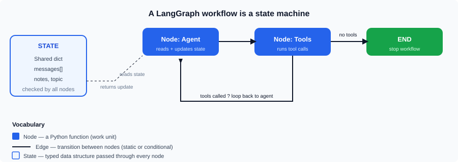

What is LangGraph?
LangGraph is an open-source Python (and JavaScript) library, built by the LangChain team, for building stateful, graph-based AI agents. Instead of forcing you to glue LLM calls together with if/else and a pile of lists, LangGraph lets you describe your application as a state machine: nodes do work, edges decide the flow, and a shared typed state carries data between them.
A huge advantage over chain-style frameworks is that the graph is controllable: you can pause, resume, retry, checkpoint, and mix deterministic Python logic with LLM calls. That is exactly what production AI agents need.
Why is it useful for orchestrating AI agents?
A bare "call the LLM and print the answer" script is not an agent. An agent loops: it reasons, decides to call a tool (like a search engine, calculator, database, or email API), observes the tool result, and reasons again — until it has an answer. Orchestrating that loop is hard because:
- The flow is non-linear — it loops, branches, and can go backwards.
- Work between steps is stateful — the conversation must persist across calls.
- LLMs are non-deterministic — the same prompt may choose a different path each run.
- Real apps mix LLMs with deterministic business logic (validation, retries, human approval).
LangGraph was designed specifically for these problems. It gives you loops, branching, persistent memory, human-in-the-loop checkpoints, streaming, and easy testing — without reinventing the state machine yourself.
The core mental model: a state machine

The entire library reduces to four ideas:
| Concept | What it is | Example |
|---|---|---|
| State | A typed data structure (usually a TypedDict) passed through every node. All nodes read it and return partial updates. | {"messages": [HumanMessage], "notes": "..."} |
| Node | Any Python function. It does one unit of work — call an LLM, run a tool, transform data. | def agent(state): ... |
| Edge | A connection between nodes that defines the order of execution. | graph.add_edge("tools", "agent") |
| Conditional edge | An edge whose destination is decided at runtime by a function inspecting the state — this is what makes agents dynamic. | if the last message has tool_calls, go to tools; otherwise END. |
The graph always has a START point, runs nodes, and eventually reaches the special END node, after which it returns the final state.
Chain vs. Agent vs. Graph
| Pattern | Flow | Example |
|---|---|---|
| Chain | Fixed, linear, no branching/looping | prompt → LLM → parse → done. (LangChain LCEL) |
| Agent (LangGraph) | Graph with loops and conditional routing | ReAct loop, multi-step tool use, supervisors |
| Workflow | Directed graph mixing LLM + deterministic steps | LLM classify → route → specialized handler |
How does LangGraph compare to other agent frameworks?
| Framework | Strength | Weakness |
|---|---|---|
| LangGraph | Low-level control, stateful graphs, checkpointing, human-in-the-loop, framework-agnostic (any model) | More boilerplate; you design the graph yourself |
| CrewAI | High-level "crew of agents with roles" abstraction, fast prototyping | Less fine-grained control over state and control flow |
| AutoGen | Conversation-based multi-agent (agents talk to each other), Microsoft | Steeper learning curve; architecture opinions baked in |
| OpenAI Agents SDK | Official, minimal, Python + TypeScript, handoffs and tools | Tightly coupled to OpenAI-style APIs; newer ecosystem |
In practice, LangGraph has become the industry default for teams that want production control — GitHub, LinkedIn, and many enterprise companies build on it.
When should you use LangGraph?
- You need a loop: tool-calling agent, RAG with self-correction, code-fix-and-retry.
- You need multiple specialized agents that share results (research → summarize → format).
- You need durable state: resume a conversation, reload after a crash, version memory.
- You need deterministic control around the LLM: validation, retries, human approval, timeouts.
prompt | llm | parser (LCEL) to keep it simple.